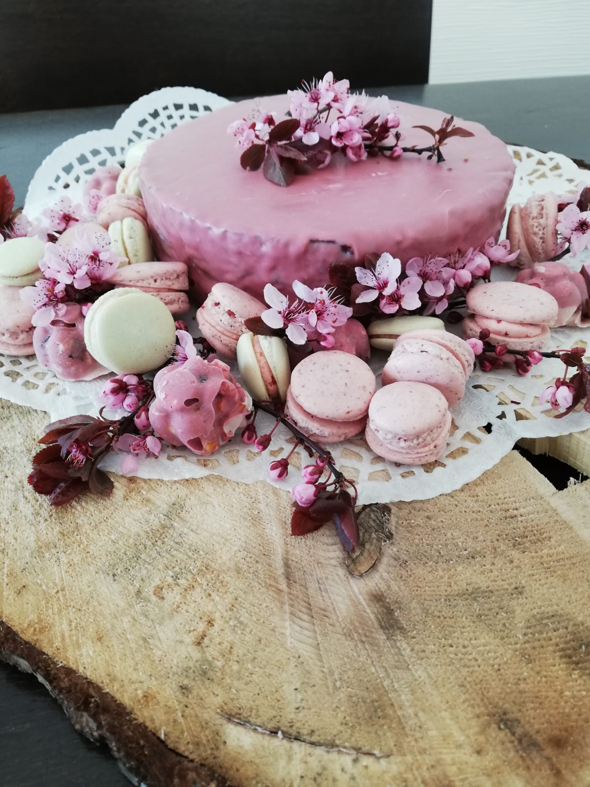
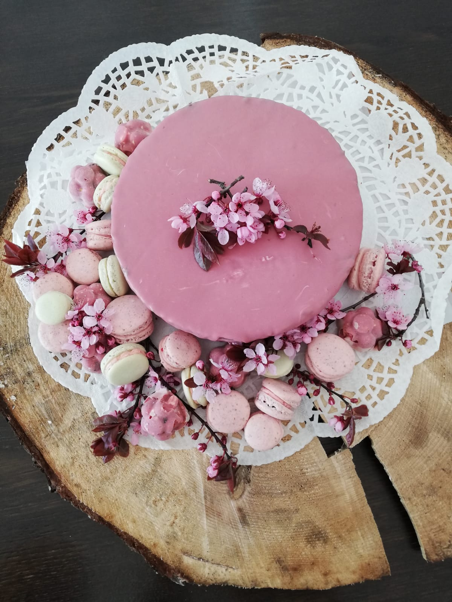

 
Schwierigkeit:
Dauer:
RÜHRMASSE
ZUM BESTREICHEN
ÜBERZIEHEN & DEKORIEREN
ZUBEREITUNG
1. Rührteig
Stelle einen Backring mit 24 cm Durchmesser auf ein mit Backfolie belegtes Lochblech. Heize den Ofen auf 160 Grad O/U vor.
Schlage das Eiweiß mit der Prise Salz steif und füge langsam den Zucker hinzu. Rühre den Eischnee nun für 2-3 Minuten weiter. Verrühre die weiche Butter mit dem Puderzucker, dem Salz und dem Vanilleextrakt in 5-6 Minuten weißcremig.
Rühre das Eigelb nach und nach zur Buttermasse hinzu, immer ein Eigelb nach dem anderen. Schmitz die kleingehackte Schokolade über einem warmen Wasserbad. Hebe das Mehl, die geschmolzene Schokolade, den Eischnee und die Milch - beziehungsweise nach belieben den Himbeergeist - vorichtig unter die Buttermasse. Fülle die Rührmasse nun in den Backring ein, verstecke sie und backe sie im vorgeheizten Ofen für etwa 40 Minuten. Nimm den Tortenboden aus dem Ofen, lasse ihn im Ring etwa zehn Minuten abkühlen und löse ihn danach mit einem Backformmesser ab. Stürze den Kuchen auf ein Abkuhlgitter und lasse ihn komplett abkühlen.
2. Sachertorte füllen
Erhitze die Erdbeermarmelade nach Belieben gemeinsam mit dem Himbeergeist in einem Topf. Nach Belieben kannst du ach Erdbeerlimes verwenden. Schneide den Sacherboden zwei Mal waagerecht mit einer Tortensäge durch. Bestreiche die böden mit der Marmelade und setze die Torte zusammen. Bestreiche auch die Außenseite mit der Marmelade und stelle den Kuchen für 15 Minuten zur Seite.
3. Sachertorte überziehen
Temperiere die Ruby-Schokolade. Stelle den Kuchen mit einem Abkühlgitter auf einen großen Teller oder ein Blech. Gieße die schokolade darüber, verteile sie mit einer Palette und lasse sie etwas abtropfen.
4.
Stelle die Torte am besten nicht in den Kühlschrank, sonder serviere sie zimmerwarm - so entfalten sich die aromen besser. Dekoriere die Torte noch mit Macarons oder vielleicht mit ein paar Früchten.